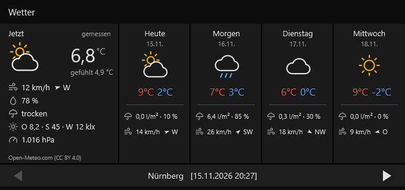

Shows the current weather on the left and a 7-day forecast on the right (4 days visible, browse with ◀ ▶) in the Windows QuadClient. The forecast comes from Open-Meteo (free, no key, data CC BY 4.0); current values can come from your own weather station via communication objects (COs).

| Field | Meaning |
|---|---|
| Search place | Place name; the first Open-Meteo match is taken. |
| Place, latitude, longitude | Display name and coordinates in degrees (point or comma). |
| Update interval | 15 minutes to 6 hours. |
| Unit temperature / wind | °C or °F, km/h or m/s – for display. |
| Unit of the wind CO | m/s or km/h – the unit the station sends. |
| CO | DPT | Value |
|---|---|---|
| Temperature measured | 9.001 | °C |
| Temperature felt | 9.001 | °C |
| Humidity | 9.007 | % |
| Wind speed | 9.005 or 9.028 | m/s or km/h (set the unit) |
| Wind direction | 5.003 | degrees, 0 = north |
| Rain | 1.001 / 1.002 / 1.005 | 1 = rain, 0 = dry |
| Brightness total | 9.004 | lux – stations with one value |
| Brightness north / east / south / west | 9.004 | lux – stations with one sensor per direction; assign only those present |
| Air pressure | 9.006 | Pa (values above 2000 are taken as Pa) or hPa; shown in hPa |
api.open-meteo.com, HTTPS). Without a connection the last forecast
stays on screen with its time stamp and the bar shows “offline”.error.log (lines with “Wetter 99-1”).